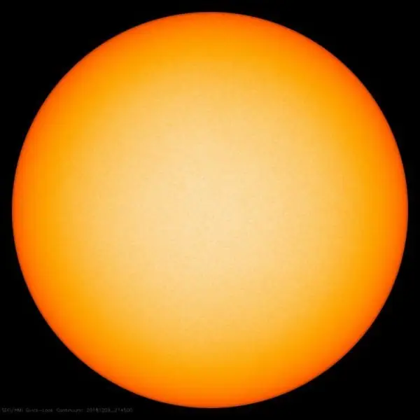
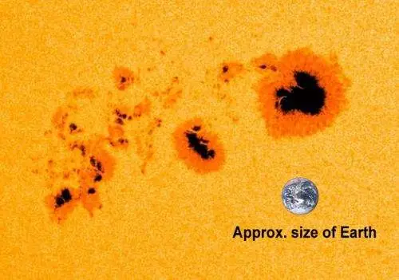
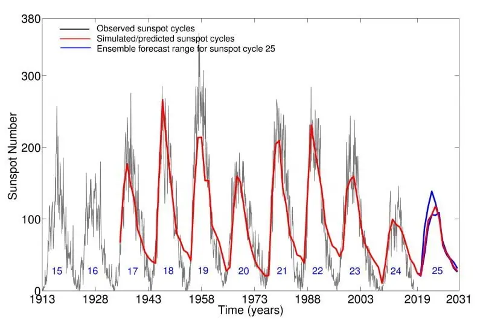
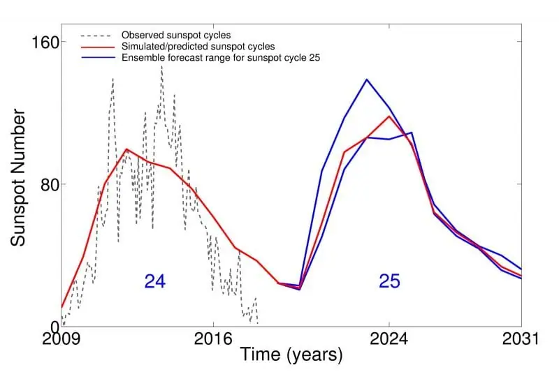

Articles ·
What will the sun do next?
By Deborah Byrd in SPACE | December 10, 2018

Many have predicted a weak sunspot cycle in the years ahead, but new work from India suggests otherwise. The work dashes speculations of a sun-induced global cooling of Earth’s climate in the coming decade.
It is thought that the current sunspot cycle – cycle 24 – will approximately span the years 2008 to 2019. In other words, we haven’t reached the lowest ebb of the cycle yet, and no one knows exactly when it will come, but solar physicists think we’re probably close. This cycle has been an odd one, with fewer dark sunspots visible on the sun’s surface than expected. Now, with the next cycle due to start, we’re beginning to see projections for what will happen when the sun revs up again and begins producing more sunspots. Will the next sunspot cycle be more “normal” or will we again see a decreased number of spots?
On December 6, 2018, the Center of Excellence in Space Sciences India (CESSI) reported that two of its scientists have made a prediction for the upcoming sunspot cycle. Solar physicist Dibyendu Nandi and his Ph.D .student Prantika Bhowmik devised a new prediction technique, which simulates conditions both in the sun’s interior, where sunspots are created, and on the solar surface, where sunspots are destroyed.
Earlier predictions (like this one) have suggested the coming sunspot cycle 25 will be weaker than the current cycle 24. But, based on their model, Nandi and Bhowmik believe cycle 25 might be similar to or even stronger than 24. They expect the next cycle to start rising about a year from now and to peak in 2024. Their work was published December 6, 2018, in the peer-reviewed journal Nature Communications.
Why should we care?
Indeed, many people do care about solar activity, due to the sun-Earth connection. High activity on the sun can negatively affect some earthly technologies, for example, electric grids and orbiting satellites. So – as Nandi and Bhowmik point out – an accurate prediction of a coming solar cycle might help space scientists plan satellite launches and estimate satellite mission lifetimes.
Another sun-Earth issue has particularly grabbed the public’s imagination: a little-understood, possible link between activity on the sun and Earth’s climate. Keep reading, to learn more.
EarthSky lunar calendars are cool! They make great gifts. Order now. Going fast!

A statement from CESSI explained the climate question:
The current sunspot cycle, dubbed as solar cycle 24, is just ending, and it has been one of the weakest cycles in a century. In fact, over the last several decades, successive sunspot cycles have significantly weakened in strength, and some earlier studies based on simplistic statistical approaches have claimed a significant weakening of the sun’s activity is imminent, resulting in a loss of sunspot cycles.
The last such episode, known as the Maunder minimum, occurred between 1645 and 1715 and coincided with the Little Ice Age, a period of long winters and global cooling.
Was there a causative link between reduced sunspot numbers and the Little Ice Age? In other words, did weakened activity on the sun cause the Little Ice Age? If so, could a series of weak solar cycles cause another global cooling in the years ahead? If that happened, the cooling would be laid on top of the ongoing trend of global warming, which virtually all climate scientists agree is caused by human activities.
For scientists, there are two big problems with the idea of a sun-caused cooling (or a sun-caused warming, for that matter). First, no known physical mechanism has yet been found, explaining exactly how a change in solar activity affects Earth’s climate.
Second, scientists are aware of only one episode of decreased sunspots during a time of global cooling. The coincidence of the Maunder Minimum and Little Ice Age is suggestive, yes. But, for scientists, it doesn’t prove anything.
Still, the coincidence exists, and the idea is intriguing. And so it’s tempting to ask if a significantly weak sunspot cycle 25 – in the coming decade – would temporarily alleviate ongoing global warming. Scientists have, in fact, been asking this question.
According to Bhowmik and Nandi, all that sort of speculation may be moot. The sun might come roaring back into something like more “normal” activity in the decade ahead; it might begin producing many more sunspots. Please note that I’m putting “normal” in quotes because no one knows what “normal” really is, for the sun.
Bhowmik and Nandi sounded confident when they said:
[We] find no evidence of an impending disappearance of sunspot cycles and thus conclude that speculations of an imminent sun-induced cooling of global climate is very unlikely.
Are they right? Will their model prove to be predictive for solar cycle 25? Time will tell.
Read more about the new study via CESSI


Bottom line: Solar cycle 24 was weak, with fewer sunspots at its peak than expected. Many have predicted an even-weaker solar cycle 25 for the coming decade. But two scientists from India have a new predictive model, based on computer simulations, suggesting otherwise.
Want to see 2018’s brightest comet? How to see comet 46P/Wirtanen
Migrated from the AUASS website archive as published, with the formatting tidied.